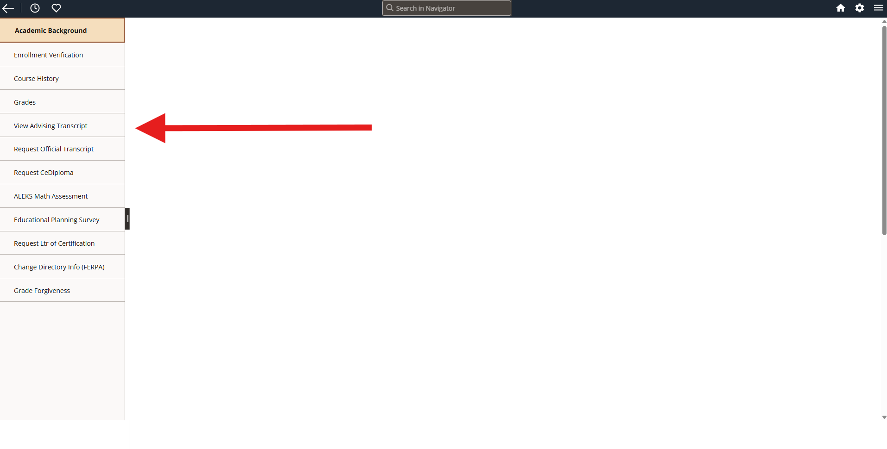
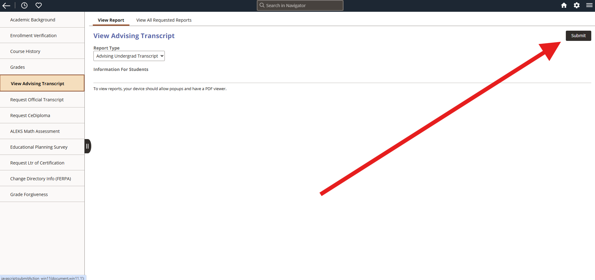
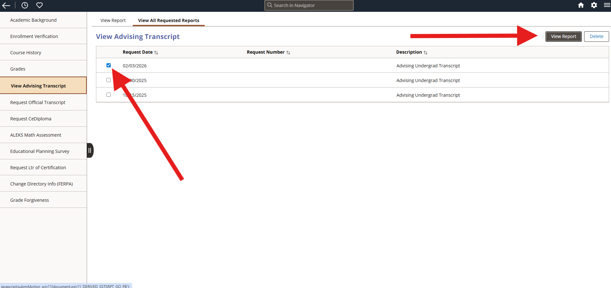

Quick Tip
Before you begin, make sure you are logged into LionPATH and viewing your Student Center. This will help you locate the Advising Transcript option more quickly.
Before you begin, make sure you are logged into LionPATH and viewing your Student Center. This will help you locate the Advising Transcript option more quickly.



